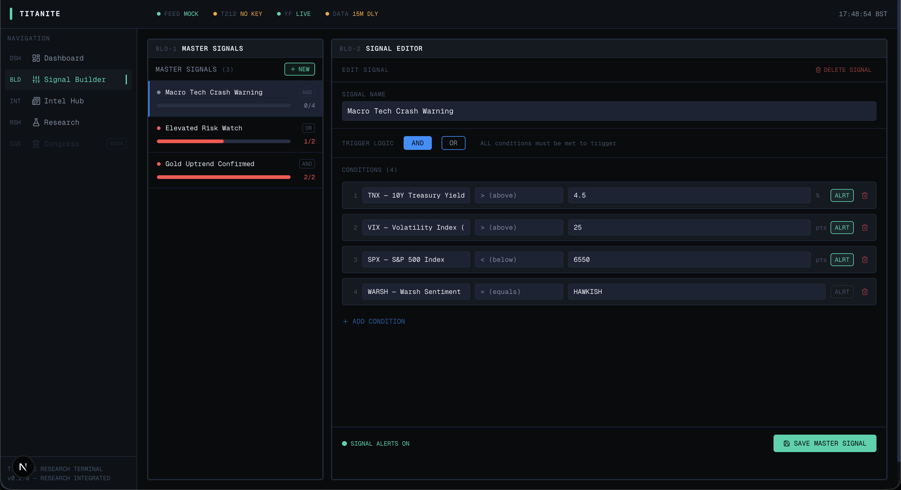
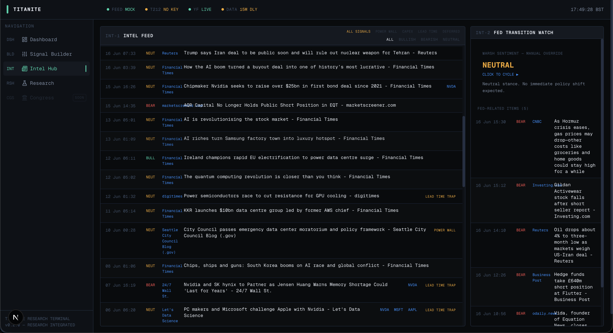

Daniel Wooster
ABOUT ME
I started programming after a period of travel and independent study. I taught myself the fundamentals and became interested in how code can turn ideas into working systems. Since then, I've focused on building practical projects and steadily improving my technical skills.
My projects are my discography, each one just as unique as the next, solving problems I've encountered or ideas that I find interesting. I thrive in environments where I can constantly learn and grow.
When I'm not at the keyboard, you'll find me at the other keyboard practising piano or at the climbing wall (still stuck at v5).
Education: BSc Computer Science & AI with Year in Industry, University of Nottingham, 2024-2028. Year 2 average: 71% (first-class band).
SKILLS
GROUPED BY WHERE I USED THEM
SKILL GROUPS
Hover or focus a key to preview. Click it, or press Enter, to lock it and see where I used those skills.
PROJECTS
GREATEST HITS
AGENTIC
A personal operating system for planning and research: provider-neutral Markdown context plus eight Claude Code subagents in a four-layer hierarchy. Rules in the repository keep the reviewer agent read-only and stop agents from grading their own work. A correction log records agent mistakes. GitHub Actions checks for file structure, agent frontmatter and secrets are configured.
Hierarchy diagram
Select a node to see its role and tool limits.
Astora Risk
A hub for compliance tools that analyse financial transactions synced from accounting software (Xero and QuickBooks, via OAuth 2.0). A deterministic rules engine uses fuzzy string matching and confidence-scored heuristics to categorise transactions. The multi-tenant backend has token encryption, role-based access control and PDF and CSV report generation. Astora Grants is the first product built on it: it tracks UK charity restricted funds against grants and produces funder-ready reports.
In development. Looking for charities that need it.


Local build; some feeds mocked.
Titanite
A single-tenant, Bloomberg-style dashboard for tracking high-volatility tech stocks and macro risk signals. The Signal Builder composes Boolean rules from metrics such as EMA crosses, VIX, TNX and gold. The Intel Hub merges Finnhub and Google News RSS feeds. A Congress Tracker for US Senate and House stock disclosures is planned. A human-machine loop sends SEC filings and earnings transcripts through agentic LLM extraction, then a manual audit, before a conviction score and tier are set.
v1 built; 2.0 rebuild in progress, local-only.
Blue Note Tuner
An iOS instrument tuner. Real-time pitch detection uses the YIN algorithm through AudioKit, with transposition offsets for Concert, Alto Sax, Tenor Sax and Trumpet. MVVM architecture.
Also built: Statify, a Spotify stats app (React, Flask, Spotify Web API).
WORK EXPERIENCE
PAST & PRESENT GIGS
LexisNexis Risk Solutions
- Built workflow-specific agents for the team, including a Streamlit-specific agent and a presentation agent, and helped optimise the AI workflow by improving the efficiency of agent outputs to cut cost and credit use.
- Analysed client data with Python and SQL in Snowflake: client health checks, policy and rule evaluations, and complex fraud case studies.
- Worked across client organisations on policy optimisation, health checks, model updates and new feature additions.
- Built internal Streamlit applications and interactive Snowflake dashboards for fraud metrics and client data.
Footprints CEC
- Developed a K-means clustering model for donor segmentation, with data cleaning, feature engineering and visualisation of the results.
- Removed over £300 in annual SaaS overhead by migrating the CRM from Salesforce, configuring Google Workspace and Meta Ads, and deploying a new e-commerce and event platform.
Earlier
Le Table D'Alix
Washing dishes, cleaning the kitchen, and assisting the chefs.
CONTACT
GET IN TOUCH
Get in touch about the projects above, data science or agentic AI systems.